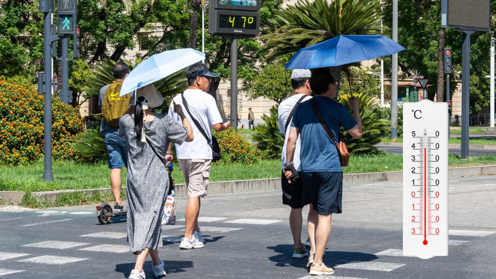

The Same Region.
A Different Temperature.
In many cities around the world, temperatures in dense urban areas are consistently higher than in nearby rural environments.
15°C hotter than nearby
rural areas
Joint Research Centre

Why is a city sometimes hotter than the countryside around it?
The Urban Heat Island Effect
Cities replace natural landscapes with asphalt, concrete and buildings — materials that absorb and store heat during the day, releasing it slowly at night. As a result, urban areas become significantly hotter than their surroundings.
Exploring the Urban Heat Island in Milan
To better understand the Urban Heat Island effect, we analyze temperature patterns across Milan, Italy.
Cargando datos…
Why Urban Heat
Islands Matter
The Urban Heat Island effect is not only about temperature — it affects health, energy systems and social equity.
HEALTH
Extreme heat is the leading cause of weather-related deaths.
Heatwave deaths in Milan (2025)
ENERGY
Hotter cities require more air conditioning, increasing energy demand and emissions. Electricity demand for cooling increases 1.5–2% for every 1°C increase in temperature.
Urban Equity & Environment
Low-income neighborhoods often have less vegetation and more heat-absorbing surfaces. Unequal exposure to heat.
Nighttime temperature difference between Milan city center and surrounding rural areas
Understanding what urban factors drive these temperature differences is essential to design effective climate adaptation strategies.
What is the causal effect of increasing
NDVI in urban areas of Milan
on Land Surface Temperature (LST)?
Density, NTL,
Land use…
Generalized Propensity
Score (GPS-IPW)
Unlike classic observational methods, the GPS extends the propensity score to continuous treatments. We estimate the GPS with XGBoost and construct IPW weights to create a balanced "pseudo-population".
XGBoost regressor: P(NDVI | X₁…Xₙ) with 10 confounders
w_i = f(t_i) / f(t_i | X_i) — marginal over conditional
Causal dose-response with bootstrapped 95% CI
Love plot: |r| < 0.10 for all confounders
Urban vegetation cools Milan −10.83 °C causally
Estimation of the causal effect of NDVI on surface temperature using Generalized Propensity Score with stabilized IPW weights and XGBoost.
Urban intervention simulator
How much would the temperature drop if we increases the vegetation in an area? Move the sliders to calculate the estimated causal effect.
Local causal effect map
Each pixel in Milan colored by how many degrees its vegetation causally cools. Blue = greater cooling.
Folium Map with Real Data
Generate the map by running in your notebook:
causal_effect_map(n_puntos=6000)
Or directly open the file
causal_effect_map_milan_real.html
De-biasing laboratory
GPS-IPW mathematically simulates a city where vegetation was planted at random. The toggle shows how correlations collapse.
GPS-IPW vs OLS vs Brute Correlation
Multiple OLS underestimates the cooling effect by 4.62°C. GPS corrects for linear overcontrol bias.
Validation Tables
Formal tests supporting the causal validity of the main result.
| Scenario | r(wind, NDVI) | Est. Bias | Adjusted Effect | Within 95% CI |
|---|---|---|---|---|
| Weak association | 0.15 | +0.19°C | −10.64°C | ✓ Yes |
| Moderate association | 0.30 | +0.78°C | −10.05°C | ✓ Yes |
| Strong association (pessimistic) | 0.50 | +2.17°C | −8.66°C | ⚠ Marginal |
Where and how to intervene?
NDVI < 0.15
Heavily paved area. Isolated tree planting has low thermal return. Neighborhood-scale intervention is needed.
NDVI 0.15 – 0.35
Maximum marginal effect. Each tree produces the highest possible thermal return. Mixed peri-urban neighborhoods.
NDVI > 0.60
Parks and forests. The additional effect of new plantings is smaller. Priority is to maintain and connect green corridors.
GPS-IPW Model · Landsat 8 · DUSAF · Summer 2021–2025 · Milan